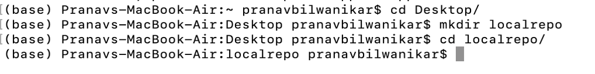
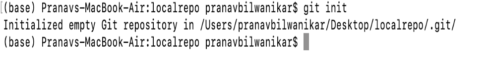
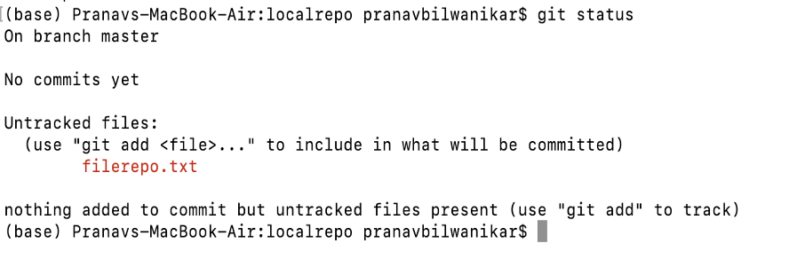
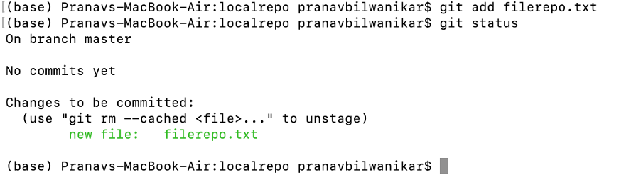
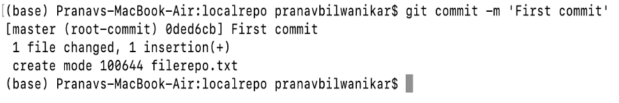

GitHub is a code hosting platform for version control and collaboration. It lets you and others work together on projects from anywhere.
You must already have Git and Github on your desktop also all the code and are performed on command line. Github account is also required.
Installing git and github account creationFor creating a local repository we’ll be using terminal. Before moving forward, we’ll require basic knowledge of terminal.
Tutorial for terminal basicsCreating a local repository with name localrepo.
To intilize a git repository in the root folder, we use git init command.
We will create a simple text file in our project folder using any textEditor.
I have created a ‘filerepo.txt’.
Now after adding and modifying the
files, git will not automatically detect those files. We will have to
explicitly tell git that there is file and it needs to get it. Git only
saves/manages changes to files that it tracks, so we’ll need to send a command
to confirm that yes, we want git to track our new file.
Now we will use git status command to see which files git knows exist.
Now all this lines means that GIT has observed us creating a file named ‘ filerepo.txt ’ but unless we use ‘ git add ’ command, it won’t be doing anything.
Now we will use git add command and rerun the git status command and would be observing the changes.
We will be using git commit -m ‘Your message’.
Hooray!!!! And here we have made our first commit.